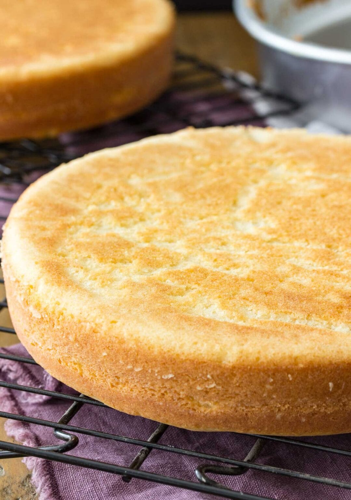

Cake recipe

Description
This recipe tastes just as good as it sounds - Simple, plush and pairs great with everything!
This recipe is popular for a reason - it is a simple and classic cake and can be used as a base for so many other cake recipes. The flavors, texture and suttle vanilla smell that will fill your room will certainly be worth trying.
It is also super simple for people starting their baking journey and the ingredients can be found in any store - maybe even gas station stores!
Ingredients
- 1⁄2 cup of unsalted butter
- 1⁄2 canola or vegetable oil
- 1 1⁄2 cup granulated sugar
- 4 large eggs
- 1 Tablespoon vanilla extract
- 3 cups all-purpose flour
- 1 Tablespoon baking powder
- 1⁄2 teaspoon salt
- 1 1⁄4 cup buttermilk
Steps
- Pre-heat the oven to 350F and prepare two round cake pans. Set aside
- In the bowl of a standard mixer, cream together butter, canola oil and sugar until creamy and well combine
- Add eggs, one at a time, beating until thoroughly combined after each addition
- Stir in vanilla extract.
- In a separate, medium-sized bowl, whisk together flour, baking powder, and salt.
- Using a spatula and gently hand-mixing, alternate adding flour mixture and buttermilk to the butter mixture, starting and ending with flour mixture and mixing until just combined after each addition. The batter should be thoroughly combined, but there may be some small lumps in the batter and avoid over-mixing (and do not use your electric mixer or stand mixer for this step).
- Evenly divide batter into your prepared cake pans, and bake on 350F (175C) for 30-35 minutes. When the cake is done, the surface should spring back to the touch and a toothpick inserted in the center should come out mostly clean with few moist crumbs (no wet batter)
- Allow cakes to cool in their cake pans for 10-15 minutes before inverting onto cooling rack to cool completely before frosting (Optional)